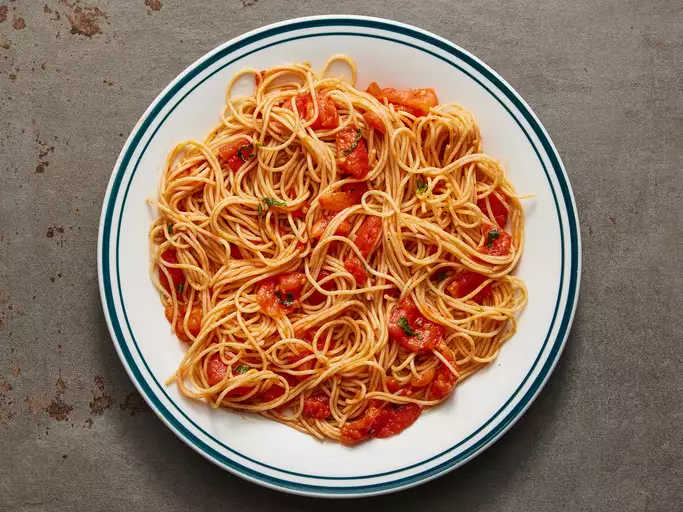

Tomato and Garlic Pasta
Home

Here is a delicious recipe for some tasty tomato and garlic pasta!
Ingredients
- 2 pounds tomatoes
- 1 (8 oz.) package angel hair pasta
- 1 tablespoon olive oil, or as needed
- 4 cloves crushed garlic
- 1 tablespoon tomato paste
- salt to taste
- ground black pepper to taste
- 1 tablespoon chopped fresh basil
- 1/4 cup grated Parmesan cheese
Steps
- Step 1: Place tomatoes in a large pot and cover with cold water. Bring just to a boil. Pour off water, and cover again with cold water. Peel the skin off tomatoes and cut into small pieces.
- Step 2: Bring a large pot of lightly salted water to a boil. Cook angel hair pasta in the boiling water, stirring occasionally, until tender yet firm to the bite, 4 to 5 minutes.
- Step 3: Meanwhile, heat olive oil in a large skillet or pan, making sure there is enough to cover the bottom of the pan, and sauté garlic until opaque but not browned. Stir in tomato paste. Immediately stir in the tomatoes, salt, and pepper. Reduce heat, and simmer until pasta is ready, adding basil at the end.
- Step 4: Meanwhile, heat olive oil in a large skillet or pan, making sure there is enough to cover the bottom of the pan, and sauté garlic until opaque but not browned. Stir in tomato paste. Immediately stir in the tomatoes, salt, and pepper. Reduce heat, and simmer until pasta is ready, adding basil at the end.
- Step 5: Reduce heat as low as possible. Keep warm, uncovered, for about 10 minutes when it is ready to serve. Garnish generously with fresh Parmesan cheese.